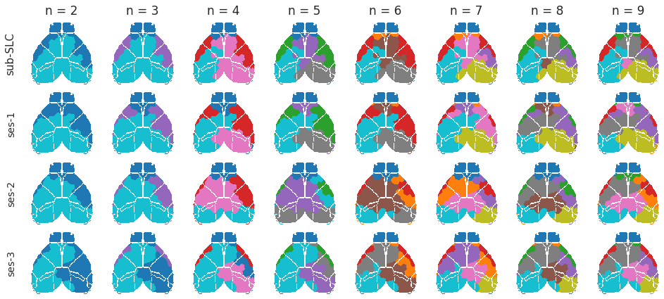
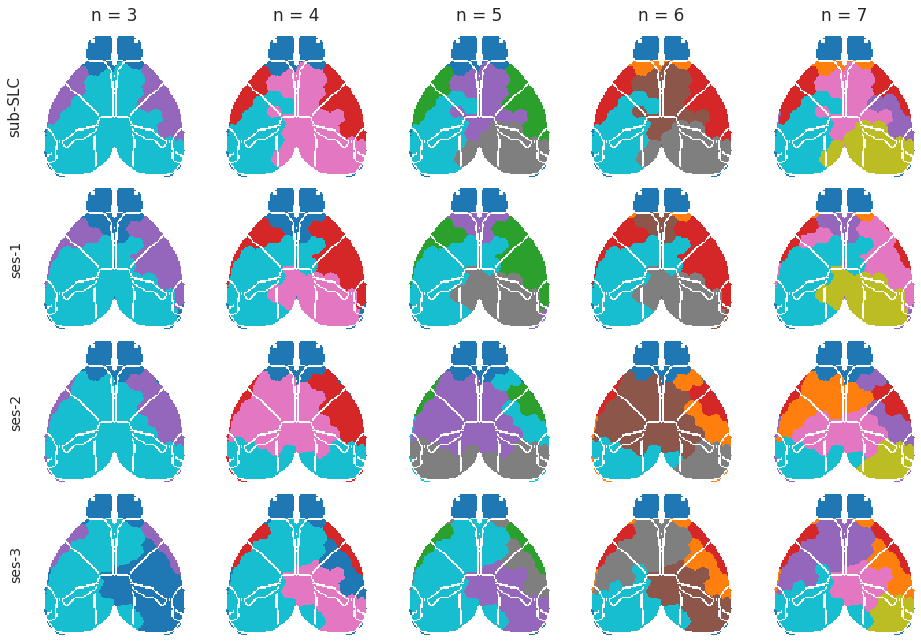

July 1st, 2021¶
Motivation: Mouse meeting presentation.
# HIDE CODE
import os
import sys
import nibabel as nib
import networkx as nx
from time import time
from pprint import pprint
from copy import deepcopy as dc
from os.path import join as pjoin
from myterial import orange, blue_grey
from IPython.display import display, IFrame, HTML
from matplotlib.colors import rgb2hex, to_rgb
import matplotlib.pyplot as plt
import seaborn as sns
# set style & no interpolalation
import matplotlib
matplotlib.rcParams['image.interpolation'] = 'none'
sns.set_style('whitegrid')
# tmp & extras dir
git_dir = pjoin(os.environ['HOME'], 'Dropbox/git')
tmp_dir = pjoin(git_dir, 'jb-Ca-fMRI/tmp')
extras_dir = pjoin(git_dir, 'jb-Ca-fMRI/_extras')
# GitHub
sys.path.insert(0, pjoin(git_dir, 'Ca-fMRI'))
from register.atlas import load_allen, make_tree_graph
from register.parcellation import Parcellation
from analysis.hierarchical import Hierarchical
from analysis.helper import *
from utils.plotting import *
from utils.render import *
from model.mouse import Mice
from model.configuration import Config
# warnings
import warnings
warnings.filterwarnings('ignore', category=DeprecationWarning)
# HIDE CODE
def hierarchical_compare(
hierarchical: dict,
n_clusters: Union[range, list],
key_fx: str = 'sub-SLC',
keys_mv: List[str] = None,
dist_measure: str = 'dice',
cmap='RdYlBu_r',
figsize=None, ):
allen = hierarchical[key_fx].mice.allen
contour = hierarchical[key_fx].mice.parcel.results2d['contour']
keys_mv = keys_mv if keys_mv else ['ses-1', 'ses-2', 'ses-3']
nrows, ncols = len(keys_mv) + 1, len(n_clusters)
figsize = figsize if figsize else (13.5, 1.75 * nrows)
fig, axes = create_figure(nrows, ncols, figsize=figsize)
match_results = {}
for j, n in tqdm(enumerate(n_clusters), total=len(n_clusters), leave=False):
fx_masks = hierarchical[key_fx].results[n]['cluster_masks']
_, x2d = masks2cluster(fx_masks, allen)
cond = np.logical_or(contour, x2d == 0)
_cond, _x = filter_boundaries([cond, x2d], mask=x2d.astype(bool))
data2plt = np.ma.masked_where(_cond, _x)
axes[0, j].imshow(data2plt, cmap=cmap)
axes[0, j].set_title(f"n = {n}", fontsize=17, y=1.06)
if j == 0:
axes[0, j].set_ylabel(f"{key_fx}\n", fontsize=15)
for i, key in enumerate(keys_mv):
mv_masks = hierarchical[key].results[n]['cluster_masks']
scores, mappings = clusters_sim_scores(fx_masks, mv_masks, weighted=True)
match_results['_vs_'.join([key_fx, key])] = (scores, mappings)
algn_idxs = list(mappings[dist_measure].values())
mv_algn = dict(zip(
list(mv_masks),
np.array(list(mv_masks.values()))[algn_idxs]
))
_, x2d_algn = masks2cluster(mv_algn, allen)
cond = np.logical_or(contour, x2d_algn == 0)
_cond, _x = filter_boundaries([cond, x2d_algn], mask=x2d_algn.astype(bool))
data2plt = np.ma.masked_where(_cond, _x)
axes[i + 1, j].imshow(data2plt, cmap=cmap)
if j == 0:
axes[i + 1, j].set_ylabel(f"{key}\n", fontsize=14)
remove_ticks(axes)
return fig, axes, match_results
Tree graphs¶
0) Root¶
n_levels = 3
root = 'root'
tree = make_tree_graph(root, n_levels=n_levels, use_acroym=False)
_ = plot_nx_tree(tree, 'neato', node_size=6000)
1) Cerebrum¶
n_levels = 4
root = 'Cerebrum'
tree = make_tree_graph(root, n_levels=n_levels, use_acroym=False)
_ = plot_nx_tree(tree, 'neato')

2) Isocortex¶
n_levels = 2
root = 'Isocortex'
tree = make_tree_graph(root, n_levels=n_levels, use_acroym=False)
_ = plot_nx_tree(tree, 'neato', figsize=(13.5, 7), arrowsize=20, node_size=6000)
n_levels = 2
root = 'Isocortex'
tree = make_tree_graph(root, n_levels=n_levels, use_acroym=True)
_ = plot_nx_tree(tree, 'dot', figsize=(13.5, 3), arrowsize=10, node_size=1000)


ROI definition¶
mice = Mice(Config(128))
mice.combine_dfs('rest')
# HIDE CODE
space = AnatomicalSpace('asl')
fig, axes = create_figure(1, 3, figsize=(13, 3.9))
slice_idxs = [58, 30, 44]
for i, (ax, plane, labels) in enumerate(zip(axes, space.sections, space.axis_labels)):
data2plt = mice.parcel.results['eroded'].take(slice_idxs[i], axis=i)
data2plt = np.ma.masked_where(data2plt == 0, data2plt)
ax.imshow(mice.allen['template'].take(slice_idxs[i], axis=i), cmap='Greys')
im = ax.imshow(data2plt, cmap='turbo')
plt.colorbar(im, ax=ax, shrink=0.6)
ax.set_title(f"{plane.capitalize()} view\n", fontsize=17)
ax.set_ylabel(labels[0], fontsize=13)
ax.set_xlabel(labels[1], fontsize=13)
_ = list(map(lambda x: x.set_visible(False), ax.spines.values()))
ax.set_xticks([])
ax.set_yticks([])
fig.tight_layout()
plt.show()
_ = mice.parcel.show()
_ = mice.parcel.show_2d()
fig, _ = mice.parcel.show_2d(
figsize=(8.4, 4.2), fontsize_big=14,
plt_kwrgs={'shrink': 0.9, 'pad': 0.08, 'ctick_labelsize': 10, 'ctick_length': 4, 'ctick_width': 0.8}
)
fig.savefig(pjoin(tmp_dir, f"annot2d_{now()}.pdf"), bbox_inches='tight', dpi=600)
Hierarchical¶
hier = Hierarchical(
mice=mice,
key='sub-SLC',
metric='correlation',
).fit(range(16)).make_clusters()
name = f"hier{mice.parcel.results['n_cortical_regions']}_{now()}.pdf"
fig = hier.results[0]['fig']
fig.savefig(pjoin(tmp_dir, name), bbox_inches='tight', dpi=600)
display(fig)

for n in range(2, 9):
_ = cluster2html(
cluster=hier.clusters[n],
save_name='CORR-REST',
n_cortex_regions=hier.mice.parcel.results['n_cortical_regions'],
save_dir=extras_dir,
)
Scene saved at /home/hadi/Dropbox/git/jb-Ca-fMRI/_extras/CORR-REST_render-128_n-2.html
Scene saved at /home/hadi/Dropbox/git/jb-Ca-fMRI/_extras/CORR-REST_render-128_n-3.html
Scene saved at /home/hadi/Dropbox/git/jb-Ca-fMRI/_extras/CORR-REST_render-128_n-4.html
Scene saved at /home/hadi/Dropbox/git/jb-Ca-fMRI/_extras/CORR-REST_render-128_n-5.html
Scene saved at /home/hadi/Dropbox/git/jb-Ca-fMRI/_extras/CORR-REST_render-128_n-6.html
Scene saved at /home/hadi/Dropbox/git/jb-Ca-fMRI/_extras/CORR-REST_render-128_n-7.html
Scene saved at /home/hadi/Dropbox/git/jb-Ca-fMRI/_extras/CORR-REST_render-128_n-8.html
hier.clusters[6].export(extras_dir, f"CORR-REST-{hier.mice.parcel.results['n_cortical_regions']}")
[PROGRESS] 'CORR-REST-128-regions_n-6.html' saved at /home/hadi/Dropbox/git/jb-Ca-fMRI/_extras
[PROGRESS] 'CORR-REST-128-clusters_n-6.html' saved at /home/hadi/Dropbox/git/jb-Ca-fMRI/_extras
( '/home/hadi/Dropbox/git/jb-Ca-fMRI/_extras/CORR-REST-128-regions_n-6.html', '/home/hadi/Dropbox/git/jb-Ca-fMRI/_extras/CORR-REST-128-clusters_n-6.html' )
Embed¶
n = 5
Render 3d¶
file = f"../../_extras/CORR-REST_render-{mice.parcel.results['n_cortical_regions']}_n-{n}.html"
IFrame(file, width=1000, height=700)
Overlap table¶
file = f"../../_extras/CORR-REST-{mice.parcel.results['n_cortical_regions']}-regions_n-{n}.html"
IFrame(file, width=1000, height=600)
Load/fit hierarchical results¶
128 - REST¶
mice = Mice(Config(128))
mice.combine_dfs('rest')
metric = 'correlation'
load_dir = pjoin(mice.cfg.results_dir, f"hierarchical")
load_dir = pjoin(load_dir, sorted([x for x in os.listdir(load_dir) if metric in x])[-1])
c_masks_dir = pjoin(load_dir, 'cluster_masks')
hex2key = np.load(pjoin(load_dir, 'hex2key.npy'), allow_pickle=True).item()
key2hex = {k: h for h, k in hex2key.items()}
load_dir, os.listdir(load_dir)
( '/home/hadi/Documents/Ca-fMRI/processed/kmeans-128/results/hierarchical/correlation-(2021_06_30)', ['reproduc.df', 'hex2key.npy', 'cluster_masks', 'fits'] )
key_fx = 'sub-SLC'
keys_mv = ['ses-1', 'ses-2', 'ses-3']
hierarchical = {}
for k, f in key2hex.items():
if k not in keys_mv + [key_fx]:
continue
hierarchical[k] = Hierarchical(
mice=mice,
metric=metric,
).load(f, load_dir, make=False).make_cluster_masks()
list(hierarchical)
['sub-SLC', 'ses-1', 'ses-2', 'ses-3']
n_clusters = range(5, 7)
fig, axes, match_results = hierarchical_compare(
hierarchical=hierarchical,
n_clusters=n_clusters,
key_fx=key_fx,
keys_mv=[],
cmap='tab10',
figsize=(7, 12),
)

name = f"hier{mice.parcel.results['n_cortical_regions']}_nclusters-{n_clusters}_{now()}.pdf"
name = name.replace(' ', '')
fig.savefig(pjoin(tmp_dir, name), bbox_inches='tight', dpi=600)
n_clusters = range(3, 8)
fig, axes, match_results = hierarchical_compare(
hierarchical=hierarchical,
n_clusters=n_clusters,
key_fx=key_fx,
keys_mv=keys_mv,
cmap='tab10_r',
figsize=(13.5, 9),
)
name = f"hier{mice.parcel.results['n_cortical_regions']}_nclusters-{n_clusters}_{now()}.pdf"
name = name.replace(' ', '')
fig.savefig(pjoin(tmp_dir, name), bbox_inches='tight', dpi=600)
128 - LED¶
mice = Mice(Config(128))
mice.combine_dfs('led')
key_fx = 'sub-SLC'
keys_mv = ['ses-1', 'ses-2', 'ses-3']
hierarchical = {}
for k in keys_mv + [key_fx]:
hierarchical[k] = Hierarchical(
mice=mice,
key=k,
metric=metric,
).fit(range(2, 10)).make_cluster_masks()
list(hierarchical)
['ses-1', 'ses-2', 'ses-3', 'sub-SLC']
n_clusters = range(2, 10)
fig, axes, match_results = hierarchical_compare(
hierarchical=hierarchical,
n_clusters=n_clusters,
key_fx=key_fx,
keys_mv=keys_mv,
cmap='tab10_r',
figsize=(13.5, 6),
)

name = f"hier{mice.parcel.results['n_cortical_regions']}_LED_nclusters-{n_clusters}_{now()}.pdf"
name = name.replace(' ', '')
fig.savefig(pjoin(tmp_dir, name), bbox_inches='tight', dpi=600)
n_clusters = range(3, 8)
fig, axes, match_results = hierarchical_compare(
hierarchical=hierarchical,
n_clusters=n_clusters,
key_fx=key_fx,
keys_mv=keys_mv,
cmap='tab10_r',
figsize=(13.5, 9),
)

name = f"hier{mice.parcel.results['n_cortical_regions']}_LED_nclusters-{n_clusters}_{now()}.pdf"
name = name.replace(' ', '')
fig.savefig(pjoin(tmp_dir, name), bbox_inches='tight', dpi=600)
64 - REST¶
mice = Mice(Config(64))
mice.combine_dfs('rest')
metric = 'correlation'
load_dir = pjoin(mice.cfg.results_dir, f"hierarchical")
load_dir = pjoin(load_dir, sorted([x for x in os.listdir(load_dir) if metric in x])[-1])
c_masks_dir = pjoin(load_dir, 'cluster_masks')
hex2key = np.load(pjoin(load_dir, 'hex2key.npy'), allow_pickle=True).item()
key2hex = {k: h for h, k in hex2key.items()}
load_dir, os.listdir(load_dir)
( '/home/hadi/Documents/Ca-fMRI/processed/kmeans-64/results/hierarchical/correlation-(2021_06_30)', ['hex2key.npy', 'cluster_masks', 'fits'] )
key_fx = 'sub-SLC'
keys_mv = ['ses-1', 'ses-2', 'ses-3']
hierarchical = {}
for k, f in key2hex.items():
if k not in keys_mv + [key_fx]:
continue
hierarchical[k] = Hierarchical(
mice=mice,
metric=metric,
).load(f, load_dir, make=False).make_cluster_masks()
list(hierarchical)
['sub-SLC', 'ses-1', 'ses-2', 'ses-3']
n_clusters = range(2, 10)
fig, axes, match_results = hierarchical_compare(
hierarchical=hierarchical,
n_clusters=n_clusters,
key_fx=key_fx,
keys_mv=keys_mv,
cmap='tab10_r',
figsize=(13.5, 6),
)
name = f"hier{mice.parcel.results['n_cortical_regions']}_nclusters-{n_clusters}_{now()}.pdf"
name = name.replace(' ', '')
fig.savefig(pjoin(tmp_dir, name), bbox_inches='tight', dpi=600)
n_clusters = range(3, 8)
fig, axes, match_results = hierarchical_compare(
hierarchical=hierarchical,
n_clusters=n_clusters,
key_fx=key_fx,
keys_mv=keys_mv,
cmap='tab10_r',
figsize=(13.5, 9),
)
name = f"hier{mice.parcel.results['n_cortical_regions']}_nclusters-{n_clusters}_{now()}.pdf"
name = name.replace(' ', '')
fig.savefig(pjoin(tmp_dir, name), bbox_inches='tight', dpi=600)
64 - LED¶
mice = Mice(Config(64))
mice.combine_dfs('led')
key_fx = 'sub-SLC'
keys_mv = ['ses-1', 'ses-2', 'ses-3']
hierarchical = {}
for k in keys_mv + [key_fx]:
hierarchical[k] = Hierarchical(
mice=mice,
key=k,
metric=metric,
).fit(range(2, 10)).make_cluster_masks()
list(hierarchical)
['ses-1', 'ses-2', 'ses-3', 'sub-SLC']
n_clusters = range(2, 10)
fig, axes, match_results = hierarchical_compare(
hierarchical=hierarchical,
n_clusters=n_clusters,
key_fx=key_fx,
keys_mv=keys_mv,
cmap='tab10_r',
figsize=(13.5, 6),
)

name = f"hier{mice.parcel.results['n_cortical_regions']}_LED_nclusters-{n_clusters}_{now()}.pdf"
name = name.replace(' ', '')
fig.savefig(pjoin(tmp_dir, name), bbox_inches='tight', dpi=600)
n_clusters = range(3, 8)
fig, axes, match_results = hierarchical_compare(
hierarchical=hierarchical,
n_clusters=n_clusters,
key_fx=key_fx,
keys_mv=keys_mv,
cmap='tab10_r',
figsize=(13.5, 9),
)

name = f"hier{mice.parcel.results['n_cortical_regions']}_LED_nclusters-{n_clusters}_{now()}.pdf"
name = name.replace(' ', '')
fig.savefig(pjoin(tmp_dir, name), bbox_inches='tight', dpi=600)
Symmetry score¶
n_clusters = range(2, 10)
metric = 'correlation'
keys = ['sub-SLC', 'ses-1', 'ses-2', 'ses-3']
dict_list = []
for n in tqdm([64, 128, 500, 1024]):
mice = Mice(Config(n))
mice.combine_dfs('rest')
load_dir = pjoin(mice.cfg.results_dir, f"hierarchical")
load_dir = pjoin(load_dir, sorted([x for x in os.listdir(load_dir) if metric in x])[-1])
c_masks_dir = pjoin(load_dir, 'cluster_masks')
hex2key = np.load(pjoin(load_dir, 'hex2key.npy'), allow_pickle=True).item()
key2hex = {k: h for h, k in hex2key.items()}
hierarchical = {}
for k, f in key2hex.items():
if k not in keys:
continue
hierarchical[k] = Hierarchical(
mice=mice,
metric=metric,
).load(f, load_dir, make=False).make_cluster_masks()
for k in keys:
for n in n_clusters:
masks = hierarchical[k].results[n]['cluster_masks']
sym_scores = [
symmetry_score(m, mice.parcel.results['mask_l'], mice.parcel.results['mask_r'])
for m in masks.values()
]
data_dict = {
'n_rois': [mice.parcel.results['n_cortical_regions']],
'n_clusters': [n],
'tag': [k],
'metric': [metric],
'dist_measure': ['symmetry'],
'val': [weighted_score(sym_scores, masks)],
'val_mean': [np.mean(sym_scores)],
'val_median': [np.median(sym_scores)],
}
dict_list.append(data_dict)
sym_df = pd.DataFrame(merge_dicts(dict_list))
fig, axes = create_figure(3, 4, (12, 9), True, 'whitegrid', 'all', 'all')
for j, n in enumerate(sym_df.n_rois.unique()):
for i, (ax, val) in enumerate(zip(axes[:, j], ['val', 'val_mean', 'val_median'])):
selected_df = sym_df.loc[sym_df.n_rois == n]
sns.lineplot(
data=selected_df,
x='n_clusters',
y=val,
hue='tag',
style='tag',
markers=True,
markersize=10,
estimator=np.mean,
ci='sd',
alpha=1.0,
legend=True,
palette='tab10',
ax=ax,
)
if i == 0:
ax.set_title(n)
plt.show()
sns.lineplot(
data=sym_df,
x='n_clusters',
y='val_mean',
hue='tag',
style='tag',
markers=True,
markersize=10,
estimator=np.mean,
ci='sd',
alpha=1.0,
legend=True,
palette='tab10',
)
<AxesSubplot:xlabel='n_clusters', ylabel='val_mean'>